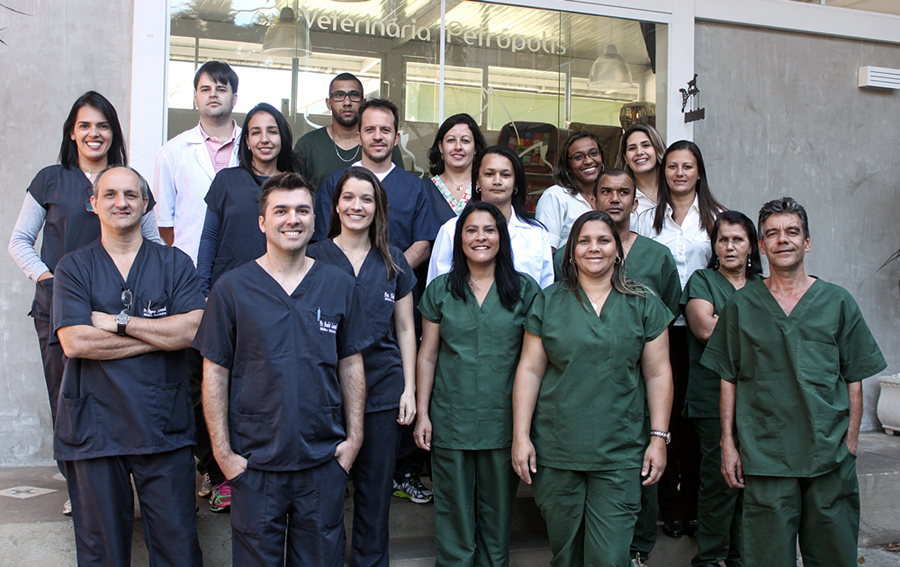
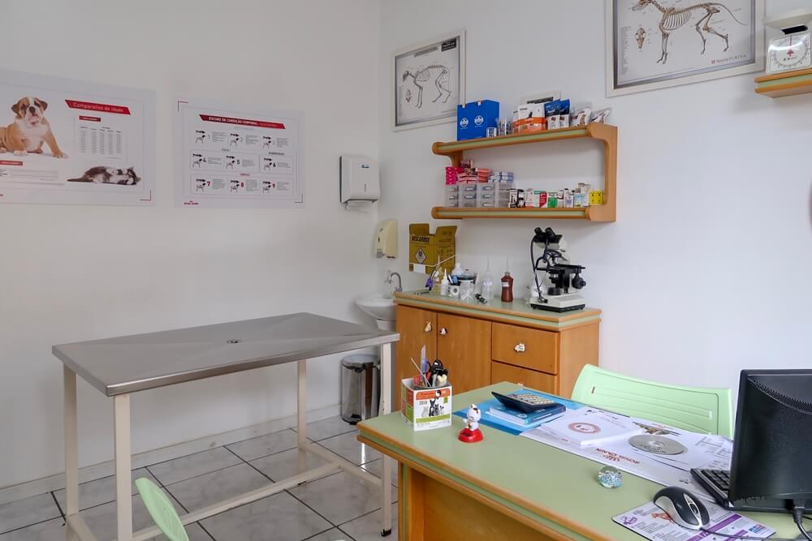

Clínica Veterinária Dom
O Centro Veterinário Dom é a marca de serviço veterinário da Petz que nasceu com o propósito de entregar o que há de melhor em medicina veterinária através de uma experiência cuidadosa e singular para os pets e seus tutores. A qualidade e o carinho que o Dom já tinha, agora com a mais alta tecnologia do segmento de saúde veterinária que a marca Seres traz proporcionando a melhor infraestrutura para proporcionar qualidade de vida para pets e seus tutores. Com atendimento de alta complexidade e equipe multidisciplinar, Seres oferece um amplo portfólio de serviços com cuidado integral 24 horas por dia. Queremos levar bem-estar para pets, tutores e colaboradores, assim como apoiar parceiros veterinários que necessitam de alguma especialidade ou exame específico. Oferecemos uma rede referência de medicina veterinária que vai atender a todos os momentos da vida do pet.

